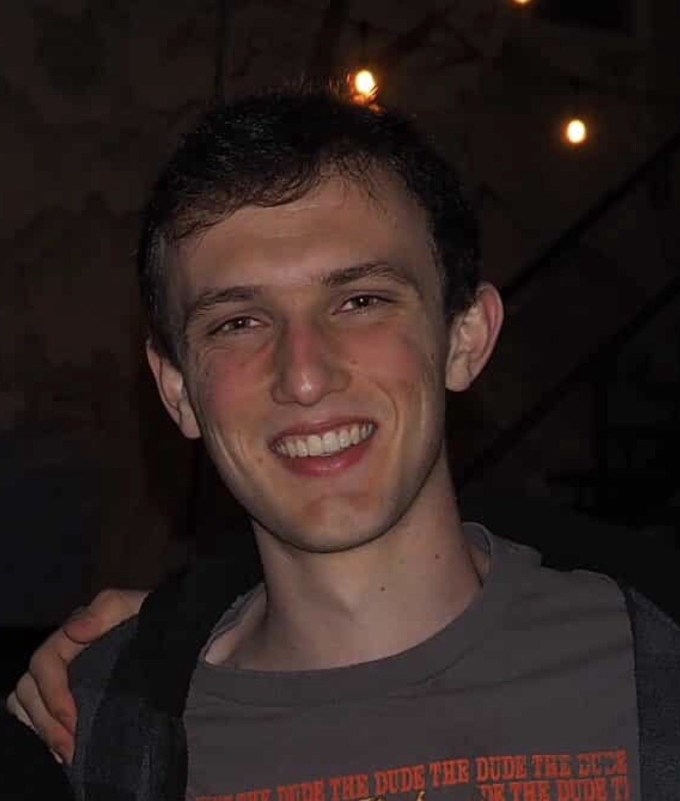
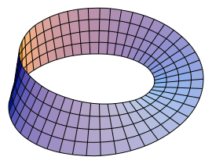
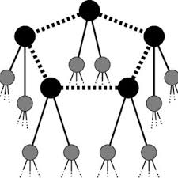

Undergraduate, Department of Mathematics — UC Santa Barbara
I am an undergraduate mathematics major at UC Santa Barbara (expected graduation 2027, GPA 3.96/4.0). My interests lie in and mathematical cryptography and numerical analysis.

Studied the Quillen-Suslin theorem under faculty mentorship through UCSB's Directed Reading Program, focusing on the relationship between algebraic vector bundles over affine space and finitely generated projective modules.

Completed a nine-week virtual program organized alongside the Arizona Winter School, covering classical and modern cryptographic methods. Topics progressed from Diffie–Hellman key exchange and the discrete logarithm problem through elliptic curve cryptography and quantum-resistant approaches, with problem sets using SageMath to analyze the underlying number-theoretic hardness assumptions.
Researched interactions between misinformation and correction protocols, including Twitter Community Notes. Managed databases with data from over 1M tweets and developed data visualizations for research presentations.